|
SPANISH SAHARA
HISTORY AND STAMPS
In 1884, Spain was awarded the
coastal area of present-day Western Sahara at the Berlin Conference, and
began establishing trading posts and a military presence. The borders of
the area were not clearly defined until treaties between Spain and France
in the early 20th century.
|
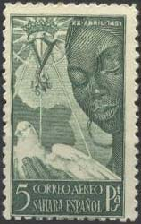 |
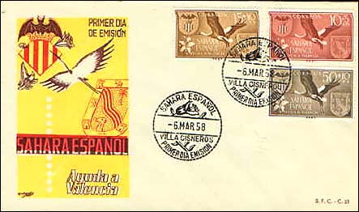 |
Spanish Sahara was then created
from the Spanish territories of Rio de Oro and Saguia el-Hamra in 1924. It
was not part of, and administered separately from, the areas known as
Spanish Morocco.
|
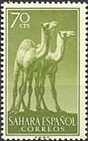 |
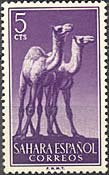 |
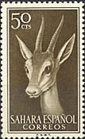 |
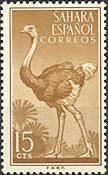 |
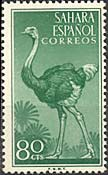 |
Entering the territory in 1884,
Spain was immediately challenged by stiff resistance from the indigenous
Sahrawi tribes. A 1904 rebellion led by the powerful Smara-based marabout,
shaykh Ma al-Aynayn was put down by France in 1910, but it was followed by a
wave of uprisings under Ma al-Aynayns sons, grandsons and other political
leaders.
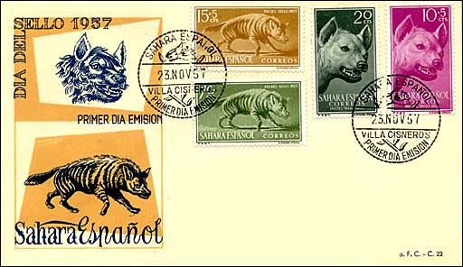
Because of this, Spain proved
unable to extend control to the interior parts of the country until 1934,
when the French army joined in crushing a major Sahrawi rebellion. Unrest
continued, however, and in 1957, rebels headed by the Moroccan-backed Army
of Liberation nearly expelled the Spanish from the country in the 1957
Invasion of Spanish Sahara. The Spanish were able to re-establish control
with the assistance of the French by 1958, and embarked on a harsh strategy
of retaliation towards the countryside, forcibly settling many of the
previously nomadic bedouins of Spanish Sahara and speeding up urbanization.
|
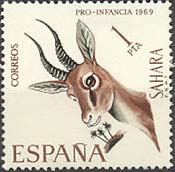 |
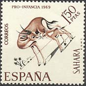 |
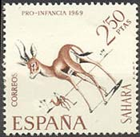 |
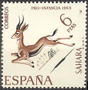 |
In 1967, the Spanish
colonization was challenged by a peaceful protest movement, the Harakat
Tahrir, which demanded independence. After its violent suppression in the
1970 Zemla Intifada, Sahrawi nationalism reverted to its militant origins,
with the 1973 formation of the Polisario Front. The Front's guerilla army
grew rapidly, and Spain had lost effective control over most of the
countryside in early 1975.
Immediately before the death of the ageing Spanish dictator Francisco Franco
in the winter of 1975, however, Spain was confronted with an aggressive
campaign of territorial demands from Morocco (and to a lesser extent
Mauritania), culminating in the Green March. Spain then withdrew its forces
and settlers from the territory, after negotiating a secret agreement with
Morocco and Mauritania, both of which promptly invaded the country.
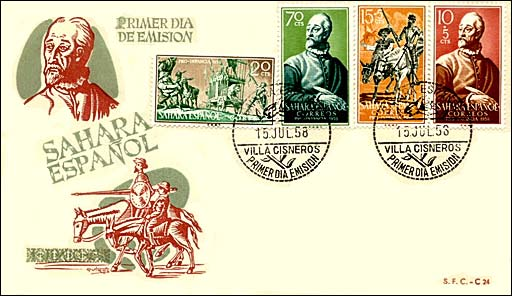
The United Nations considers the
former Spanish Sahara a non-decolonized territory, with Spain as the formal
administrative power. UN peace efforts have aimed at the organization of a
referendum on independence among the Sahrawi population, but this has not
yet taken place. The African Union and at least 44 governments consider the
territory a sovereign, albeit occupied, state under the Sahrawi Arab
Democratic Republic (SADR), which an exile government backed by the
Polisario Front. Source:
Wikipedia
Credits: many thanks to Tracy Barber (USA) for some of FDC's
scans.
|